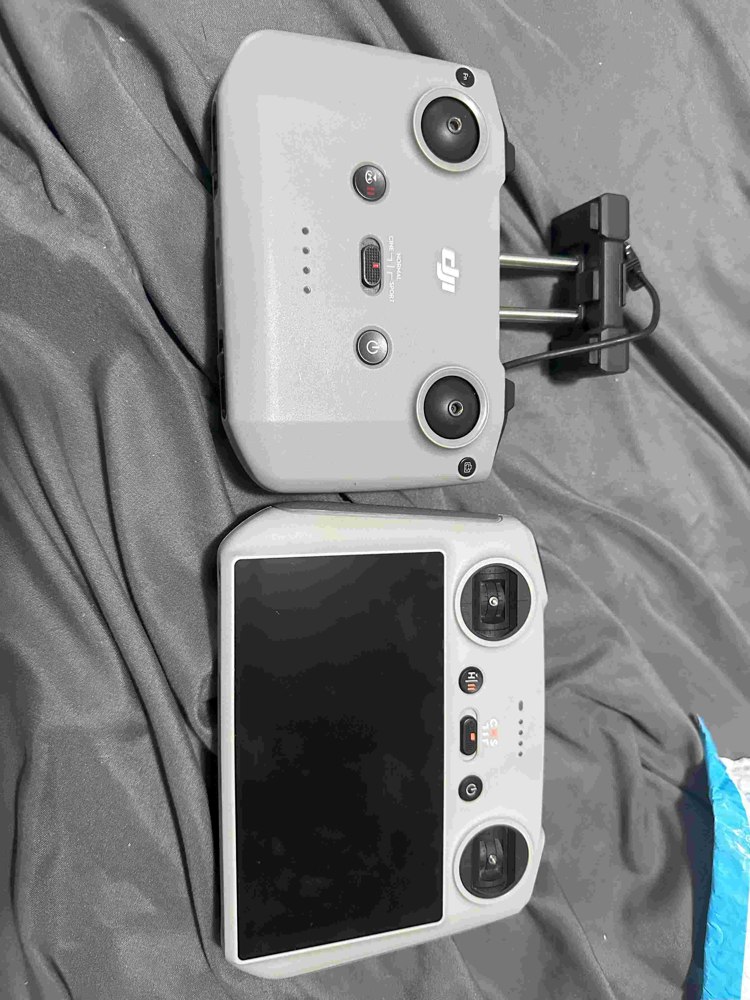

My DJI Controller Comparison

| DJI-RCN1 |
DJI-RC |
| Phone mount |
Built-in display |
| Supports O1 and O2 Transmission |
Supports O3+ Transmission |
| 3.5 hours battery life |
4 hour battery life |
| Weighs more with phone mounted |
Lighter total weight |
| Normal Control Sticks |
Dual-spring control sticks |
| Only charging port |
Built-in ports |
| Lower price |
Higher Price |
| 1 programmable button |
2 programmable button |
Overall although the newer controller is more expensive it makes up for it by being a better controller in most
things. The RC controller allows the user to setup their drones faster when they want to fly. It eliminates the need to mount and plug in a phone..
It is also better for your phone as it doesn't heat up or use up the battery when flying your drone. The introduction to more programable buttons allow
the user to have more customization for how they want to fly their drones. These buttons can also be combined with the scroll wheels found
on the controller allowing the scroll wheels to have more than one purpose.
Email me at: chowdh52@uwindsor.ca
Back to Top of Page
Adib Md Alim Chowdhury
chowdh52@uwindsor.ca